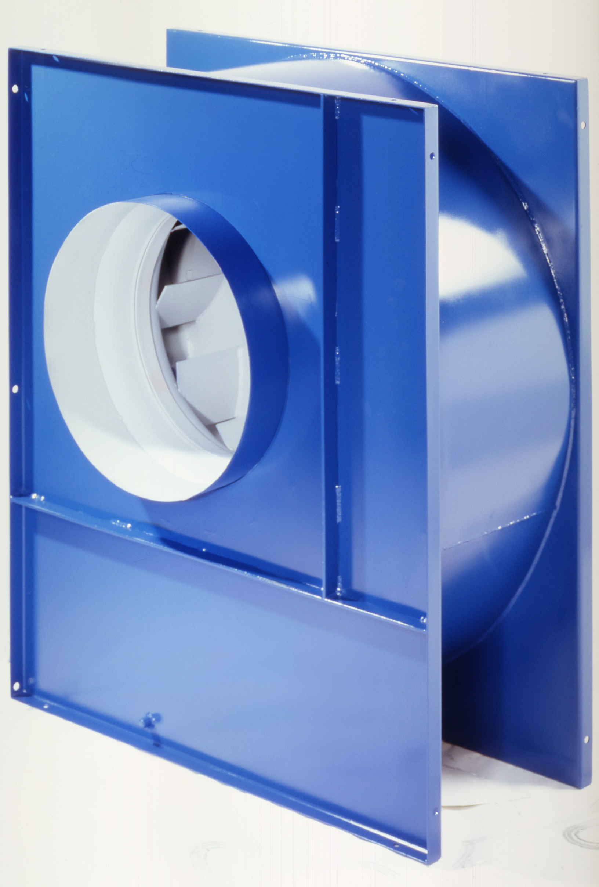
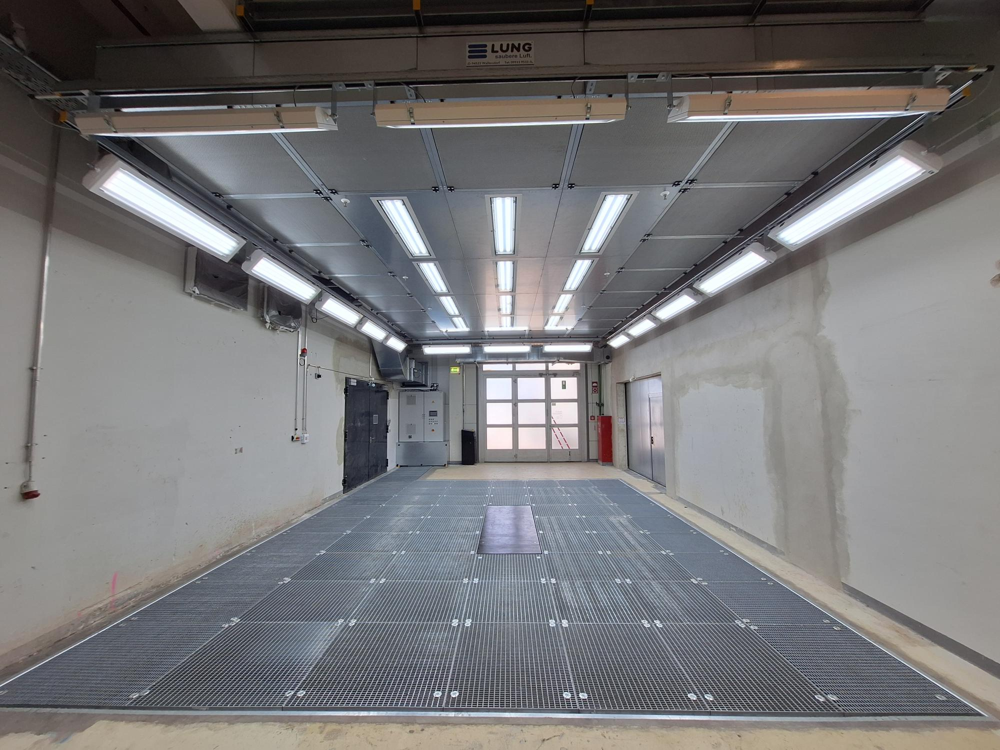

Ausgereifte Technik
für saubere Luft.
Wir entwickeln, fertigen und montieren Absaug-, Filter- und Klimaanlagen für die Industrie. Konstruktion, Stahlbau, Montage, Service — alles im eigenen Haus. Seit über 75 Jahren.
Vier Bereiche. Eine Quelle.
Von der Absaugung über die Filtration bis zur Wärmerückgewinnung — wir decken die gesamte lufttechnische Prozesskette ab.
Entstaubungstechnik
Absaug- und Filteranlagen für Holz-, Metall-, Kunststoff- und Papierstaub. Bunkeraufsatzfilter, Gewebefilter, Containerfilter, Brikettieranlagen.
Details ansehen →Oberflächentechnik
Spritzkabinen, Trockenspritzwände, Farbnebel-Absaugung. Saubere Luft bei Lackier- und Beschichtungsprozessen.
Details ansehen →Wärmerückgewinnung
Rotationswärmetauscher mit bis zu 85 % Rückgewinnungsgrad. Heizenergie sparen, CO₂ reduzieren, Amortisation in 3–6 Jahren.
Details ansehen →Kabinenbau
Schallschutz-, Lackier- und Sonderkabinen aus Sandwichpaneel. Individuell konstruiert und gefertigt in Wallersdorf.
Details ansehen →Von der Anfrage bis zum laufenden Betrieb
Analyse & Beratung
Prozess verstehen, Normen prüfen, Anforderungen definieren.
Konstruktion & Auslegung
CAD-Planung, Dimensionierung, Materialwahl durch eigene Konstrukteure.
Fertigung im eigenen Werk
Stahlbau, Blechbearbeitung, Schweißen — in Wallersdorf unter voller Qualitätskontrolle.
Montage & Inbetriebnahme
Installation durch eigene Monteure, deutschlandweit. Einweisung des Bedienpersonals.
Wartung & Service
Regelmäßige Inspektion, Ersatzteile, Notfallservice — für langen, störungsfreien Betrieb.

Seit 1948. Eigene Fertigung. Null Kompromisse.
Was als klassischer Anlagenbauer in Niederbayern begann, ist heute ein verlässlicher Partner für mittelständische Industriebetriebe in ganz Deutschland. LUNG steht für eine Sache: Alles aus einer Hand — von der Auslegung über den Stahlbau bis zur Inbetriebnahme. Ohne Subunternehmer, ohne Qualitätsverluste an Schnittstellen.
Unter der Führung von Geschäftsführer Fabian L. Fischer, staatlich geprüfter Techniker, verbindet LUNG solides Handwerk mit moderner Konstruktionstechnik.
Realisierte Projekte

Entstaubungsanlage für industrielle Bearbeitung
Filteranlage · Absaugung · Montage

Zentralabsaugung mit Brikettierung
Gewebefilter · Brikettieranlage · Rohrleitung

Schallschutzkabine mit integrierter Lüftung
Kabine · Lüftungstechnik · Schallschutz
Was Kunden wissen wollen
Projekt besprechen?
Kostenlose Erstberatung. Direkt mit unseren Technikern.